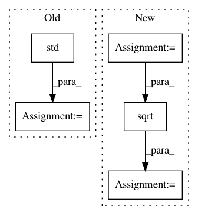

9ce99b87ced85d30b755c4bf8e94b1d592b963bd,nilmtk/metrics.py,,rms_error_power,#Any#Any#,137
Before Change
re = {}
for appliance in predicted_power:
re[appliance] = np.std(predicted_power[appliance] -
df_appliances_ground_truth[appliance].values)
return re
//////////////////// FUNCTIONS BELOW THIS LINE HAVE NOT YET CONVERTED TO NILMTK v0.2 //////////
After Change
for pred_meter, ground_truth_meter in both_sets_of_meters:
sum_of_squared_diff = 0.0
n_samples = 0
diff_generator = diff_between_two_meters(pred_meter, ground_truth_meter)
for diff, _ in diff_generator:
sum_of_squared_diff += (diff ** 2).sum()
n_samples += len(diff)
error[pred_meter.instance()] = math.sqrt(sum_of_squared_diff / n_samples)
return pd.Series(error)
//////////////////// FUNCTIONS BELOW THIS LINE HAVE NOT YET CONVERTED TO NILMTK v0.2 //////////
In pattern: SUPERPATTERN
Frequency: 4
Non-data size: 5
Instances
Project Name: nilmtk/nilmtk
Commit Name: 9ce99b87ced85d30b755c4bf8e94b1d592b963bd
Time: 2014-07-10
Author: jack-list@xlk.org.uk
File Name: nilmtk/metrics.py
Class Name:
Method Name: rms_error_power
Project Name: MLWave/kepler-mapper
Commit Name: eb3443d8d4f24005d7dac4320b82917a2f455728
Time: 2020-08-06
Author: gabriel.altay@gmail.com
File Name: kmapper/visuals.py
Class Name:
Method Name: _format_cluster_statistics
Project Name: nilearn/nilearn
Commit Name: 6704c535b8c59ab3b9b98c0489a051654c1ee727
Time: 2013-04-05
Author: philippe.gervais@inria.fr
File Name: nisl/signals.py
Class Name:
Method Name: _standardize
Project Name: QUANTAXIS/QUANTAXIS
Commit Name: a1d1c2ce8d20099a51a3a55d0fcb18659a3e34c9
Time: 2020-05-06
Author: 11652964@qq.com
File Name: QUANTAXIS/QAARP/QARisk.py
Class Name: QA_Risk
Method Name: calc_sortino